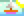
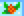
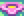

Estações
No Stardew Valley existem 4 estações sendo elas o verão  inverno  primavera  e o outono
Cada uma delas dura 28 dias, cada uma também tem seus festivais únicos, momentos onde
todos os moradores do Vale do Orvalho se reúnem para fazer atividades. Nesses dias é
possível comprar itens especiais, jogar jogos, ganhar prêmios e obter informações.
Nesses dias é possível comprar itens especiais, jogar jogos, ganhar prêmios e obter
informações. Cada estação tem certas plantações que podem ser plantadas.